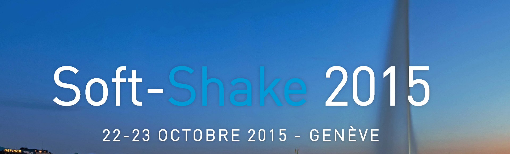

Développeur d’applications commerciales (Java)
Bureautique, gestion de données militaires à l’aide du logiciel « MilOffice »
Réalisation de présentation (PowerPoint)
Dépannage
Gestion de données
Sécurité
Maçonnerie
Réalisation d’un travail personnel sur des thèmes choisis de la police, en vue de l'obtention de mon CFC en informatique
Bachelor en informatique de gestion
Maturité professionnelle technique
Certificat fédéral de capacité en informatique
Certificat du meilleur travail de recherches personnel de l’année
Section maturité
Formation théorique/pratique de médiateur
Java
C#
Pascal
HTML/CSS
Bootstrap
Icefaces / JSF
Spring
Swing
Suite office

Softshake - Genève
VoxxedDays - Ticino